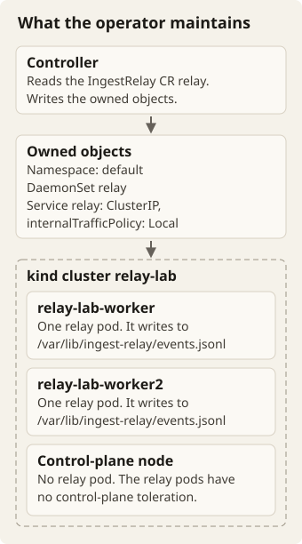

Go · Kubernetes · Build and learn
Build a relay operator
Run your relay on Kubernetes. Then replace hand-maintained manifests with a controller that keeps the workload running and tells you what is happening.
The challenge
Your Ingest Relay works locally. Now run one relay on each worker node. Each relay writes logs to the disk of its own node. An IngestRelay custom resource will describe the desired configuration. Your operator will maintain a DaemonSet and a node-local Service for it.

- The controller reads the
IngestRelayCRrelay. - The controller writes two owned objects in the default namespace: the DaemonSet
relayand the ClusterIP Servicerelay. The Service usesinternalTrafficPolicy: Local. - The kind cluster
relay-labhas two workers,relay-lab-workerandrelay-lab-worker2. Each worker runs one relay pod. - Each relay pod writes
events.jsonlin/var/lib/ingest-relayon the disk of its node. - The control-plane node runs no relay pod. The relay pods have no control-plane toleration.
Use Go, Docker, kind, kubectl, Kubebuilder v4 and Helm. You can also use Podman if you adapt the container commands. See the Kubebuilder setup guide for tool installation. Follow these rules for versions and modules:
- Use the Go and tool versions that your chosen Kubebuilder release supports. Record these versions.
- The allowed modules are controller-runtime, client-go, apimachinery and the scaffold dependencies.
Pair with AI for explanations, implementation and debugging. Before you change cluster objects, predict what the controller should observe and change. Your design choices remain yours. Explain them in the README.
These topics are outside the challenge: webhooks, API conversion, leader election tuning, high availability, OLM bundles, publishing, multi-cluster management and production hardening.
The outputs below are representative targets, not captured test runs. Names match the examples. Hashes, ages, timings, image sizes and condition messages will vary. Wait for observable readiness. Do not copy a fixed sleep.
Glossary
This brief uses each term below with one meaning only.
- CR: an
IngestRelaycustom resource, for examplerelayinrelay.yaml. - Desired state: the configuration that the spec of a CR describes.
- Operator: the separate project that you create in Step 2, and the image that you build from it in Step 6. It contains the
IngestRelayAPI types and the controller. - Controller: the operator code that reconciles each CR. You run it with
make rununtil Step 6. In Step 6, the Helm chart runs it. - Reconcile: make the owned objects of a CR match its desired state.
- Owned object: the DaemonSet or the Service that the controller creates for a CR. Each owned object carries
app.kubernetes.io/managed-by=relay-operatorand a controller owner reference to the CR. - Owned field: a field that the controller sets on an owned object. Another controller may maintain other metadata on the same object.
- Drift: a value in an owned field that differs from the desired state, for example after a manual change.
- Rollout: the DaemonSet replaces its pods after a change to the pod template.
- Acknowledged event: an event whose request received 202. Rejected or disconnected requests are not acknowledgements.
- Condition: one of the CR status entries
Available,ProgressingandDegraded. Each condition has a CamelCase reason and a message. - Pair: the AI assistant that you work with.
Prepare a local cluster
Save this file as kind.yaml. It has two untainted workers, so you can observe a rollout across nodes.
kind: Cluster
apiVersion: kind.x-k8s.io/v1alpha4
nodes:
- role: control-plane
- role: worker
- role: workerkind create cluster --name relay-lab --config kind.yaml
kubectl config use-context kind-relay-lab
kubectl get nodesExpect three Ready nodes, including relay-lab-worker and relay-lab-worker2. The commands below use the default namespace for relays. When a step tells you to keep the controller running, run it separately.
Step 1 — Put the relay on both workers
In your relay project, write a multi-stage Dockerfile. It must produce a static binary and a final image smaller than 50 MB. Use a version tag. Never use latest. Build the image and load it into your local cluster:
docker build -t ingest-relay:v0.1.0 .
kind load docker-image ingest-relay:v0.1.0 --name relay-lab
docker image inspect ingest-relay:v0.1.0 --format '{{.Size}}'The last command must print fewer than 50,000,000 bytes. Choose a runtime image and filesystem permissions that let the relay write its node-local directory. Document whether you use an init container, root or another approach.
Write relay-demo.yaml. It contains a DaemonSet named relay-demo. Give the DaemonSet these properties:
- Make it listen on
0.0.0.0:8080. - Mount a
hostPathat/var/lib/ingest-relay. Writeevents.jsonlthere. - Add readiness and liveness probes on
/healthz. - Set at least ten seconds of termination grace.
- Do not add a control-plane toleration.
- Use
IfNotPresentfor the loaded image. - Label its pods
app=relay-demo. The commands below use this label.
kubectl apply -f relay-demo.yaml
kubectl rollout status daemonset/relay-demo --timeout=120s
kubectl get daemonset relay-demoExpected columns after readiness
NAME DESIRED CURRENT READY
relay-demo 2 2 2In another terminal, select a specific pod. Then you know which node's file to inspect. Keep this port-forward running:
RELAY_POD=$(kubectl get pods -l app=relay-demo -o jsonpath='{.items[0].metadata.name}')
RELAY_NODE=$(kubectl get pod "$RELAY_POD" -o jsonpath='{.spec.nodeName}')
kubectl port-forward "pod/$RELAY_POD" 8080:8080From a request terminal, send an event:
curl -sS -o /dev/null -w '%{http_code}\n' \
--data-binary '{"id":"operator-1","service":"checkout","level":"info","message":"running on kind"}' \
http://127.0.0.1:8080/eventsExpected
202Wait for the flush interval. Then stop the port-forward with Ctrl+C. In that same terminal, inspect the selected node container:
docker exec "$RELAY_NODE" cat /var/lib/ingest-relay/events.jsonlExpect a JSON record that preserves the four submitted event fields. The record also has the UTC receive-time field that you chose in the relay. The timestamp varies. This file is in the filesystem of the node container, not on your laptop.
Test a clean exit:
- Follow the logs of the pod. Keep this command running.
- In another terminal, delete the pod.
- Expect the clean-exit totals of the relay before the replacement.
Delete relay-demo.yaml before Step 3, so that it cannot share the operator's files.
AI mentor prompt
I am on Step 1, putting the relay on both workers. Ask me to explain how my image gets from Docker to the kind nodes. Ask me why the event file is on the node container and not on my laptop. Give one hint at a time. Do not edit files. Do not show the solution unless I ask for it.
Step 2 — Give the workload an API
Create a separate operator project. These commands scaffold types and a controller. They do not implement the reconcile logic:
mkdir relay-operator
cd relay-operator
kubebuilder init --domain example.com --repo example.com/relay-operator
kubebuilder create api --group telemetry --version v1alpha1 --kind IngestRelayWhen Kubebuilder asks whether to create the resource and the controller, answer yes to both. Define a namespaced telemetry.example.com/v1alpha1 kind IngestRelay with a status subresource. Generate schema validation and defaults for these fields:
| Spec field | Type and rule | Default |
|---|---|---|
image | Required, non-empty string | None |
queueSize | int32 ≥ 1 | 128 |
batchSize | int32 ≥ 1 | 16 |
flushInterval | Positive Go duration string, with pattern validation | 1s |
port | int32, 1024–65535 | 8080 |
hostPath | Absolute path string | /var/lib/ingest-relay |
resources | Optional ResourceRequirements | None |
Keep the duration validation consistent with the relay:
- Accept examples such as
500msand2s. - Reject nonpositive values.
- Document the supported syntax.
Add field descriptions. Add the printer columns IMAGE, DESIRED, READY and AGE.
Run make generate manifests install. Save this file as relay.yaml:
apiVersion: telemetry.example.com/v1alpha1
kind: IngestRelay
metadata:
name: relay
spec:
image: ingest-relay:v0.1.0kubectl apply -f relay.yaml
kubectl get ingestrelay relay -o jsonpath='{.spec.queueSize}{" "}{.spec.batchSize}{" "}{.spec.flushInterval}{"\n"}'
kubectl explain ingestrelay.specExpected defaults
128 16 1sThe explanation should describe every field. The API server must reject a copy of the resource with queueSize: 0. At this step, the CR can exist without any pods. The next step adds that capability.
AI mentor prompt
I am on Step 2, giving the workload an API. Ask me where the defaults and the schema validation for each spec field come from. Ask me to predict what happens when I apply a CR with queueSize: 0. Give one hint at a time. Do not edit files. Do not show the solution unless I ask for it.
Step 3 — Reconcile desired state
Implement the reconcile logic in the controller. Keep make run running in the operator project. For each CR, create exactly one DaemonSet and one ClusterIP Service. Create both in the namespace of the CR. Name both after the CR. Both carry app.kubernetes.io/managed-by=relay-operator and a controller owner reference to the CR.

- You apply or patch a CR. Its spec is the desired state.
- The controller reads the spec of the CR.
- The controller creates or updates one DaemonSet and one ClusterIP Service.
- From Step 5: the controller reads
desiredNumberScheduledandnumberReadyfrom the DaemonSet. - From Step 5: the controller writes the CR status. The status has
status.observedGeneration, the counts and the conditions. - The controller reconciles again. It reverts drift and recreates deleted objects within 30 seconds. An unchanged desired state produces no DaemonSet or Service writes.
The pod inherits these values from the spec: the image, resource requirements, port, hostPath, queue size, batch size and flush interval. Set the relay flags as follows:
- Set
-listento all interfaces on the chosen port. - Set
-outto<hostPath>/events.jsonl. - Set
-queue-size,-batch-sizeand-flush-intervalto their corresponding spec values.
Keep the probes, the volume and the termination grace from Step 1. Use per-CR pod labels, so that each Service selects only its own relay. The Service uses the configured port and internalTrafficPolicy: Local.
Revert drift in owned fields and recreate deleted objects within 30 seconds. When you delete the CR, let garbage collection delete the DaemonSet and the Service. Do not add a finalizer. Distinguish owned fields from metadata that another controller may maintain.
kubectl rollout status daemonset/relay --timeout=120s
kubectl get service relay -o jsonpath='{.spec.type}{" "}{.spec.internalTrafficPolicy}{"\n"}'
kubectl get daemonset relay -o jsonpath='{.metadata.ownerReferences[0].kind}{"\n"}'Expected
ClusterIP Local
IngestRelayDelete the Service and watch for its replacement:
kubectl delete service relay
kubectl get service relay --watchExpect a new Service within the 30-second bound. Stop the watch with Ctrl+C. Repeat the test: change an owned field manually and check that the controller restores it.
In envtest, check these behaviors:
- object creation
- selectors
- translated arguments
- owner references
- drift repair
Use the scaffold’s test target to provision its API-server test binaries. envtest has no kubelet. It will not make relay pods Ready for you. Test CR deletion on kind, where garbage collection actually runs. Then apply relay.yaml again.
AI mentor prompt
I am on Step 3, reconciling desired state. Ask me what the controller reads and writes for one CR, and why each Service selects only its own relay. Ask me to predict what happens when I delete the Service. Give one hint at a time. Do not edit files. Do not show the solution unless I ask for it.
Step 4 — Change configuration safely
A spec change should update the pod template and roll the DaemonSet one pod at a time. Choose rollout settings such as maxUnavailable. Document them. With healthy storage and graceful pod termination, events acknowledged with 202 must survive the rollout in node-local files. This requirement does not promise that events survive a node failure or the deletion of the kind cluster.
kubectl patch ingestrelay relay --type=merge -p '{"spec":{"queueSize":256}}'
kubectl rollout status daemonset/relay --timeout=120s
kubectl get daemonset relay -o jsonpath='{.spec.template.spec.containers[0].args}{"\n"}'Expected argument excerpt. The formatting and the argument order are yours.
-queue-size 256Do the drain check:
- Send uniquely identified events through a port-forward.
- Record which requests received 202.
- Trigger a rollout.
- Wait for the rollout to complete.
- Compare the accepted IDs against the records on both worker disks.
The port-forward may disconnect when its pod disappears. Reconnect it as needed. Rejected or disconnected requests are not acknowledgements.
Reconciliation must also be quiet when nothing changes. Test this in a controlled envtest:
- Reconcile an already-correct resource again.
- Compare the resourceVersions of the DaemonSet and the Service. They must be unchanged.
Test a spec update separately. Assert that its intended template fields change. On a live cluster, status updates can change versions independently. So a live cluster is not a reliable no-op test.
AI mentor prompt
I am on Step 4, changing configuration safely. Ask me to predict how the DaemonSet changes after I patch queueSize to 256. Ask me how I prove that acknowledged events survive the rollout, and that a no-op reconcile writes nothing. Give one hint at a time. Do not edit files. Do not show the solution unless I ask for it.
Step 5 — Report what is happening
Populate status.observedGeneration with the generation that the controller reconciled successfully. Mirror the DaemonSet’s desiredNumberScheduled and numberReady in the CR status. Give each condition a CamelCase reason and a useful message:
Available=Truewhen desired is greater than zero and ready equals desired.Progressing=Truewhile the DaemonSet’s observed generation or updated counts lag the current template.Degraded=Trueafter a reconcile failure, or under your documented broader failure definition.
Do not treat a successful API update as evidence that replacement pods are healthy. Use envtest to supply DaemonSet status. Then check the counts, the conditions and the observed generation in the CR.
kubectl wait --for=condition=Available ingestrelay/relay --timeout=120s
kubectl get ingestrelaysExpected after reconciliation and readiness
NAME IMAGE DESIRED READY AGE
relay ingest-relay:v0.1.0 2 2 2mTry an unavailable image. Inspect the pod events and the CR conditions. Then restore the working version:
kubectl patch ingestrelay relay --type=merge -p '{"spec":{"image":"ingest-relay:missing"}}'
kubectl get ingestrelay relay -o yaml
kubectl patch ingestrelay relay --type=merge -p '{"spec":{"image":"ingest-relay:v0.1.0"}}'
kubectl rollout status daemonset/relay --timeout=120sOnce a replacement cannot start, expect a rollout in progress. Expect counts that reflect reality. Report Degraded according to your documented rule. Never invent readiness. Conditions can be briefly stale while changes propagate.
AI mentor prompt
I am on Step 5, reporting what is happening. Ask me when Available, Progressing and Degraded are true for my operator. Ask me why a successful API update does not prove that replacement pods are healthy. Give one hint at a time. Do not edit files. Do not show the solution unless I ask for it.
Step 6 — Package a repeatable installation
Build an operator image and a Helm chart at charts/relay-operator. Install the CRD, the required RBAC and the operator. Install the operator in its own namespace, under its own service account. Make the operator image and resources configurable through values. For these examples, expose image.repository and image.tag. Use IfNotPresent for local images.
Grant only the permissions that reconciliation needs:
- IngestRelay resources and their status
- DaemonSets
- Services
- events, if the controller emits them
Run one controller replica for this exercise. Avoid requiring cluster-admin. Stop the local make run process before you start the packaged controller.
make docker-build IMG=relay-operator:v0.1.0
kind load docker-image relay-operator:v0.1.0 --name relay-lab
helm lint charts/relay-operator
helm upgrade --install relay-operator charts/relay-operator \
--namespace relay-system --create-namespace --wait --timeout=2m \
--set image.repository=relay-operator --set image.tag=v0.1.0
kubectl wait --for=condition=Available ingestrelay/relay --timeout=120sExpected final command output
ingestrelay.telemetry.example.com/relay condition metTo check the packaged controller, keep this port-forward running:
kubectl port-forward daemonset/relay 8080:8080In a second terminal, send a new event:
curl -sS -o /dev/null -w '%{http_code}\n' \
--data-binary '{"id":"packaged-1","service":"checkout","level":"info","message":"installed with Helm"}' \
http://127.0.0.1:8080/eventsExpect 202 and a matching stored record on the selected worker. Then script the complete installation on a fresh kind cluster. Make the script do these steps:
- Create the cluster.
- Load both images.
- Install the chart.
- Apply the CR.
- Wait for Available=True.
- Send an event.
- Check its record.
Give readiness checks a timeout. Make the script fail clearly when any command fails. A successful install into a cluster that already has your CRD is not sufficient.
Document the effects of Helm upgrade and uninstall on CRDs and existing CRs. Helm’s crds/ directory installs definitions. It does not normally upgrade or delete them. Make your chosen handling explicit. See Helm’s CRD guidance.
Finish
make test
helm lint charts/relay-operatorExpect the controller tests to pass. Expect the chart to be lint-clean. Keep a separate end-to-end result that shows the real cluster reached readiness. In the rollout test, track response statuses as well as file contents. A client connection failure must not quietly become a missing “accepted” event.
Provide these items:
- the relay Dockerfile
- the operator source and tests
- the chart
- an end-to-end script
The README should get a fresh cluster to Available=True. It should also explain these topics:
- the API defaults
- ownership
- drift repair
- rollouts
- conditions
- RBAC
- filesystem permissions
- Helm behavior
- unfinished work
Review with your pair why reconciliation converges. Also review why an unchanged desired state produces no resource writes.
AI mentor prompt
I am on Step 6, packaging a repeatable installation. Ask me which RBAC permissions my controller needs, and why it needs each one. Ask me what Helm upgrade and uninstall do to my CRD and existing CRs. Give one hint at a time. Do not edit files. Do not show the solution unless I ask for it.